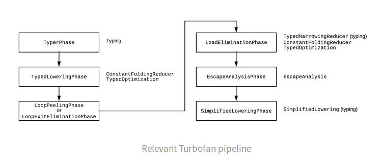
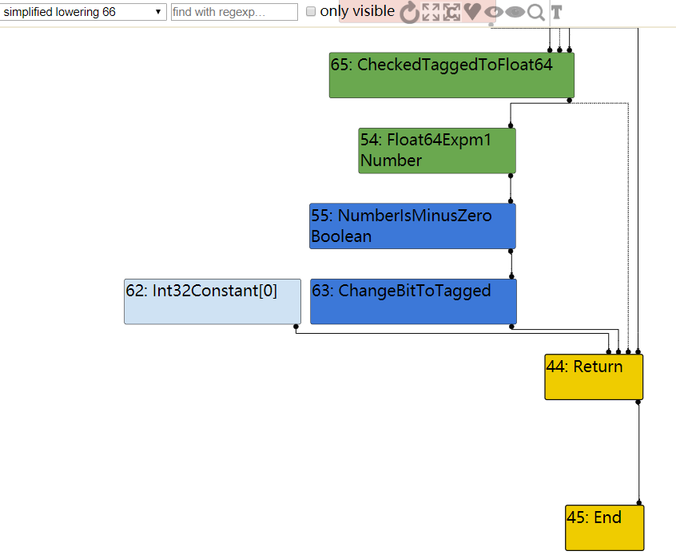
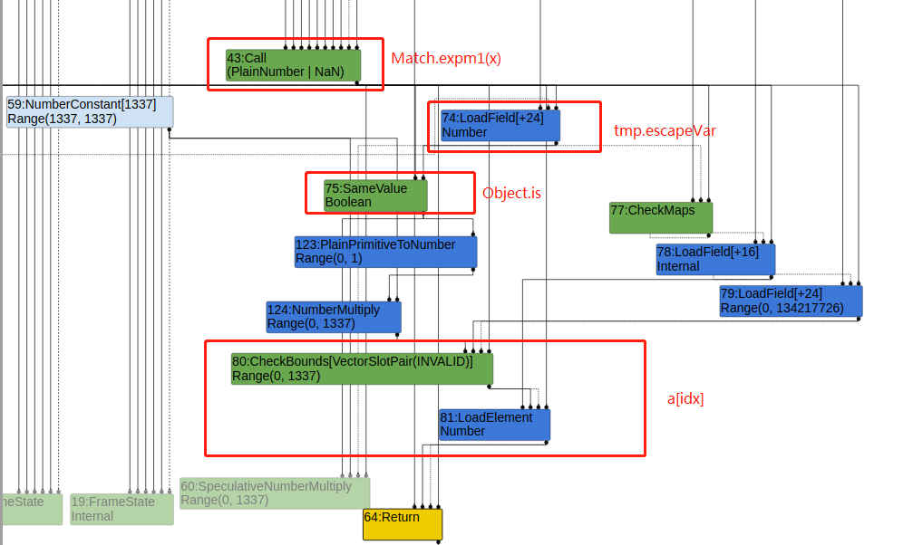
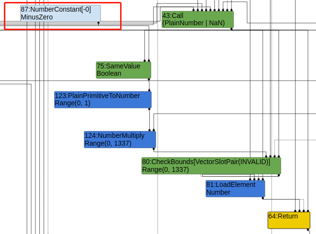

最近我在学习浏览器利用，就找了 35C3 的题目练习了一下。在看别人的 writeup 的时候，我发现很多文章的思维跨度都好大，作为小白就得花很长时间去理解为什么这么做。此文记录了一些我做这道题学到的东西。
这题是根据 https://bugs.chromium.org/p/project-zero/issues/detail?id=1710 这个 bug 改编的， 官方对这个bug 的patch 有两处，分别是https://cs.chromium.org/chromium/src/v8/src/compiler/typer.cc?rcl=9680338c622d4693f984b49fb24d101acd2d8112&l=1437 和 https://cs.chromium.org/chromium/src/v8/src/compiler/operation-typer.cc?rcl=9680338c622d4693f984b49fb24d101acd2d8112&l=420 。 而题目中的是将typer.cc 的patch 进行了还原：
1 | --- a/src/compiler/typer.cc |
在 v8 中, -0和0不相等， -0是float， 而MathExpm1的返回类型则被设置成Union(PlainNumber或NaN),PlainNumber 指-0 除外的浮点数。
使用题目给的poc进行测试, 发现-0 和 Math.expm1(-0) 的结果是true， 按道理 float 和 plainNumber/NaN 是不相等的，这就需要我们分析一下优化过程中出现了什么问题。
1 | // ./d8 poc.js --allow-natives-syntax |
v8 提供了 --trace-turbo 命令用于跟踪优化过程，同时在v8的代码中提供了Turbolizer工具来浏览优化过程。我在分析的时候发现https://v8.github.io/tools/head/turbolizer/index.html 也提供了一样的能力，这样就不需要自己手动打开这个工具了。
v8 的优化过程如下图：
从图中我们可以看到， typeing会发生在TyperPhaes, LoadEliminationPhase和SimplifiedLoweringPhase 阶段， 另外在TypedLoweringPhase和LoadEliminationPhase阶段还会进行常量折叠操作。
上面这张图中，我们直接观察simplified lowering 阶段， 发现Math.expm1被替换为了Float64Expm1， 也就是说这个时候 -0 和 Math.expm1(-0) 结果是一样的， 那为什么会这么转换呢？ 因为在我们第一个foo(0) 之后进行优化， v8 以为以为我们所有的输入都是0，所以当优化完成后，我们在用-0 的时候，返回值也是-0， 这个时候自然就是true了。
那要如何才能去掉 Float64Expm1 呢？ 很简单，我们只要传入一个错误的类型就行，比如string， 让v8以为我们还有别的输入，这样优化过程就不能直接用float64Expm1 代替。
1 | ./d8 poc.js --allow-natives-syntax |
这个时候，我们就触发了bug。
由poc 可以知道 现在foo(-0) 函数一定是返回false,但光是false 并没什么用，得想办法转化成别的形式。
于是就相到用数组来实现oob
1 | function foo(x){ |
从图中可以发现，idx 始终为0， 并且没有CheckBounds node。
这个过程中，我们知道Object.is 是可以返回true的，所以，如果v8 优化成false的时候，我们idx 为 1就可以实现oob了。
1 | function foo(x, y){ |
继续测试发现传两个参数的形式也不行，最后还是因为存在CheckBound节点无法实现oob。于是我们就想到能不能在Escape Analyze 做点手脚。
1 |
|
这个时候我们发现， 我们成功去掉了CheckBound节点，至于为什么还是需要回归到v8的优化路线上。
LoadEliminationPhase 阶段的Turbolizer 分析流程图，此时tmp.escapeVar为LoadField[+24]，SameValue并不知道它为-0，所以返回值为Boolean，范围为0或1，后续数组的访问范围为（0，1337），CheckBounds的检查范围也为（0，1337）。
EscapeAnalysis 阶段：LoadField[+24] 节点变成了NumberConstant[-0]，并且EscapeAnalysis 后不再进行常量折叠，所以不直接返回false。
SimplifiedLoweringPhase阶段，去掉了CheckBound节点，因为进行typing 后，v8认为SameValue 返回的永远 是false ，后面访问不会越界，于是将CheckBound 去掉。
这样我们就实现了数组的越界读写
直接利用exp 来讲解。
1 | var buf = new ArrayBuffer(16); |
第一阶段， 利用越界读写，在数组后面布置float数组，这样越界的时候就可以修改float_array 数组的长度，我们可以使用float_array 进行越界读。
第二阶段， 利用越界读，找到标记好的wasm_functon对象地址
第三阶段，找到data_buf->backing_store， 这是ArrayBuffer 特有的一个字段，找到后，就可以根据arraybuffer 构造读写原语了。
最后， 根据wasm_function–>shared_info–>WasmExportedFunctionData（data）–>instance+0xe8 找到rwx的区域，将shellcode写入该区域即可。在另一份exp 中发现，也能 wasm_function -> shared_info -> mapped_pointer -> start_of_rwx_space 这样获取rxw地址。
这次还是学到了不少的东西，特别是写文章的时候，发现好多知识都还没串起来，有些也是似懂非懂，所以这块还是要多学习，多练习。
https://7o8v.me/2019/10/30/35C3-CTF-krautflare-exploit/
https://de4dcr0w.github.io/35c3ctf-Krautflare%E5%88%86%E6%9E%90.htm